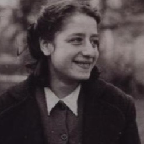

Portrait d’archive
Simy Kadosche (Simone Lagrange) (S)
Simy KADOSCHE
Simy Simone KADOSCHE est née le 23/10/1930 à Saint-Fons en France.
Rassemblée à Lyon, elle est déportée à Auschwitz le 30/06/1944 par le convoi n°76.
Matricule A 86.24 , tante de Simon et Joseph Abergel déportés, sœur de Fibi Abergel née Kadoche (née le 21/05/1919, à Mogador, Essaouira, Maroc), déportée. Aujourd'hui Simone Lagrange. Décédée le 17 février 2016 à La Tronche (près de Grenoble).
Dernière adresse connue : 37, rue Raspail 69190 (Saint-Fons)
Nom : KADOSCHE
Prénom(s) : Simy Simone
Date naissance : 23/10/1930
Âge (ans) : 13
Lieu naissance : Saint Fons
Pays ou département : Rhône
Lieu rassemblement : Lyon
Dernière adresse : 37, rue Raspail
Ville : Saint Fons
Code postal : 69190
N° Convoi : 76
Date déportation : 30/06/1944
Informations diverses : Originaires du Maroc, ses parents, Simon et Rachel Kadosche, ont rejoint la France dans les années 1920. Trahie par une personne qu’elle hébergeait, la famille est arrêtée le 6 juin 1944 et emmenée à la Gestapo, place Bellecour à Lyon. Simone et ses parents sont été emprisonnés à la prison de Montluc. La jeune fille est brutalisée par Klaus Barbie, chef de la Gestapo de la région lyonnaise, qui cherche en vain à savoir où se cachent ses frères et sœurs.
Déportée à Auschwitz avec sa mère Rachel Kadosche née Amzallag (10/06/1901, Mogador, Essaouira, Maroc). Sa mère est gazée le 23 août 1944. Son père Simon Kadosche sera déporté par le convoi 78 du 11/08/1944. Matricule A 86.24; évacuée le 18 janvier 1945, emmenée à Ravensbrück, rapatriée en France le 27 mai 1945. Survivante aujourd'hui Simone Lagrange, tante de Simon et Joseph Abergel déportés, sœur de Fibi Abergel, déportée (Mémorial) (recensement Saint Fons). Simy a pris le nom de Simone Lagrange. Elle est décédée le 17 février 2016 à La Tronche (près de Grenoble).
Une plaque porte son nom au collège Alain de Saint-Fons. Le collège Simone Lagrange porte son nom 15 Rue des Jardins, à Villeurbanne (69100).
Lieu de déportation : Auschwitz
Lieu de départ : Drancy
Nombre total de déporté·e·s du convoi : 1100
Gazé·e·s à l'arrivée : 479 (43,5 %)
Survivant·e·s en 1945 : 182 (16,5 %)